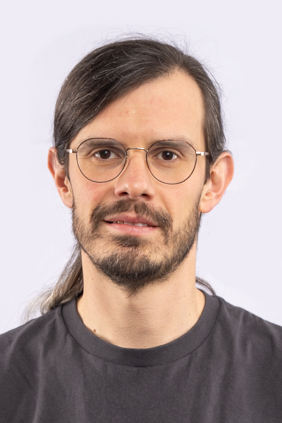
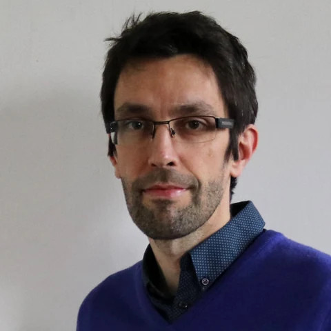
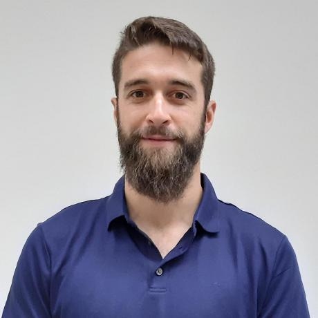

Hazard sensing & detection
Multimodal sensing and detection of small, concealed, or unfamiliar hazards.
Proposed workshop co-located with ICRA 2027 · Pending acceptance
FIRST EDITION · SEOUL, REPUBLIC OF KOREA
From Perception to Learning and Action
A workshop on how robots sense, understand, and respond to hazards.
ABOUT THE WORKSHOP
HERo focuses on the hazards robots need to detect, assess, and respond to. These include concealed objects, fire, smoke, radiation, toxic releases, and structural instability.
The workshop connects perception, learning, and action in settings where data can be scarce and observations uncertain. It brings together research on sensing, robust perception, situational awareness, and robot response.
Applications include disaster response, industrial inspection, nuclear decommissioning, and environmental monitoring.
RESEARCH THEMES
From sensing to decisions in the field.
Multimodal sensing and detection of small, concealed, or unfamiliar hazards.
Perception in smoke, dust, darkness, and GPS-denied environments, with uncertain or incomplete observations.
Mapping, situational awareness, and coordination across individual robots and multi-robot teams.
Learning from limited data, simulation transfer, shared autonomy, and human-in-the-loop response.
PROPOSED FORMAT
Five invited talks and a one-hour poster session.
Example morning session, 08:30–12:30. The date, room, and timings are subject to acceptance and conference arrangements. Times are local to Seoul.
INVITED TALKS
Disaster robotics and experience deploying robots with responders.
Talk title to be announced
Swarm engineering and coordination across robot teams.
Talk title to be announced
Rescue robotics and systems for demanding disaster environments.
Talk title to be announced
Field robotics, mapping and navigation in challenging terrain.
Talk title to be announced
Korea Disaster Relief Team (KDRT), Republic of Korea
An operational search-and-rescue perspective on robot use.
Talk title to be announced
Speaker photos will be added if the workshop is accepted.
PARTICIPATION
We welcome papers on completed research, work in progress, and conceptual approaches, of a maximum of 6 pages, excluding references. Accepted contributions will be presented as posters, with selected spotlights.
Submissions will undergo single-blind review, so they do not need to be anonymised. Submission instructions and deadlines will follow if the workshop is accepted.
ORGANISING TEAM
Royal Military Academy and KU Leuven, Belgium

Royal Military Academy, Belgium
Royal Military Academy, Belgium
KU Leuven, Belgium

KU Leuven, Belgium

University of Luxembourg, Luxembourg
Norwegian University of Science and Technology, Norway
IEEE RAS ENDORSEMENT
HERo is endorsed by the following technical committee of the IEEE Robotics and Automation Society (RAS).